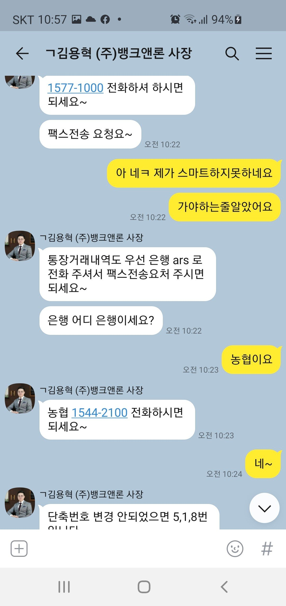

[직장인대출] 김용혁이사님 감사합니다^^
지난번에도 친절하게 설명해주시고
대출받게 되서 정말고맙습니다~^^
지난번 대출받을때도 이번에도
두서없는 질문에도
카톡도 일일이 답변해주시고
귀찮게많이 해드린것같아
지나고보니 죄송스럽네요^^;;
직장인대출 생각보다 잘받게되서
감사합니다~건강하세요^^
작년에 대출받은게 1600만원정도 됩니다
이번엔 재직기간 4개월지나서 신청했더니
알아보시고 대출을도와주셨어요
건강보험자격득실확인서 등본 재직증명서
서류가 필요했구요
빠르게 진행해주셨어요
